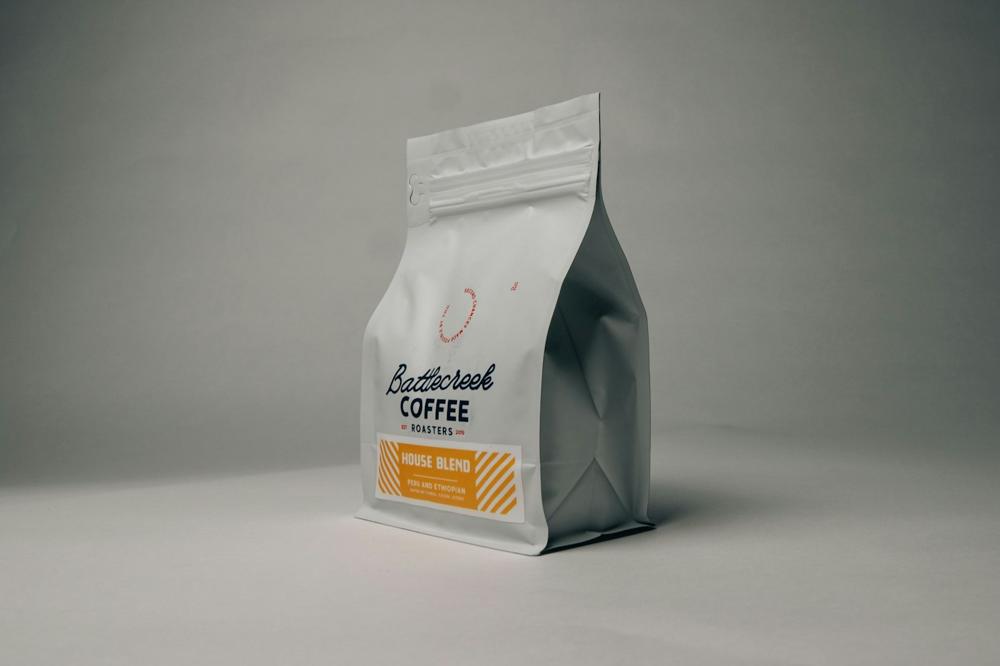
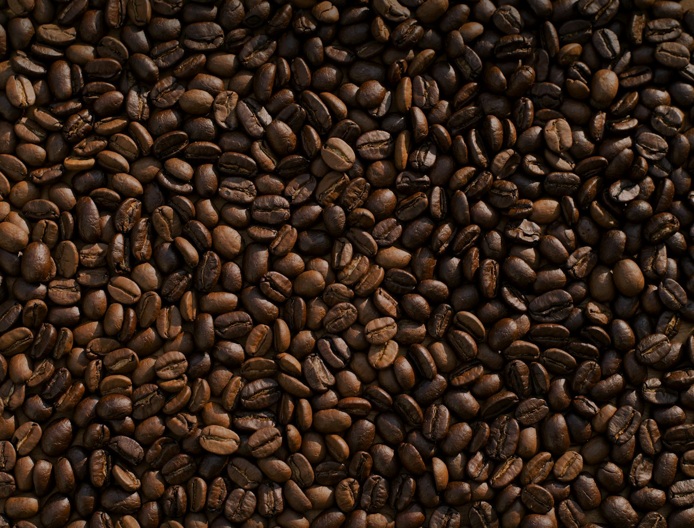

Un buen café cambia el día
El sabor de volver
a lo esencial.
Un café para empezar conversaciones, compartir momentos y disfrutar lo extraordinario de cada día.
PARA CADA MOMENTO
Nuestros cafés
Desde el primer sorbo hasta la última conversación.
* Productos, presentaciones y precios ilustrativos; deben confirmarse con Café Los Monchos.

EL RITUAL DEL CAFÉ
Cada taza tiene
algo que contar.
Hay momentos que merecen una pausa. Un aroma que reúne, una conversación que se alarga y ese primer sorbo que sabe a casa.
Conoce más ↗MONCHOSENCUENTRA TU FAVORITO
Elige tu momento
Una selección para cada forma de disfrutar el café.

HECHO PARADISFRUTAR
NUESTRA ESENCIA
Mucho más
que una taza
de café.
En Café Los Monchos creemos en lo sencillo: un buen café, una buena historia y tiempo para compartirla. Creamos una experiencia cálida, cercana y auténtica.
Esta es una propuesta de texto de marca. La historia real será escrita junto al cliente.
Explora la colección ↗DETALLES QUE IMPORTAN
Regala buenos momentos
Un detalle especial empieza con un gran café.
Un regalo que
siempre se disfruta.
Arma un detalle con nuestros cafés y comparte algo más que un producto: comparte una experiencia.
Ver kits de regalo ↗